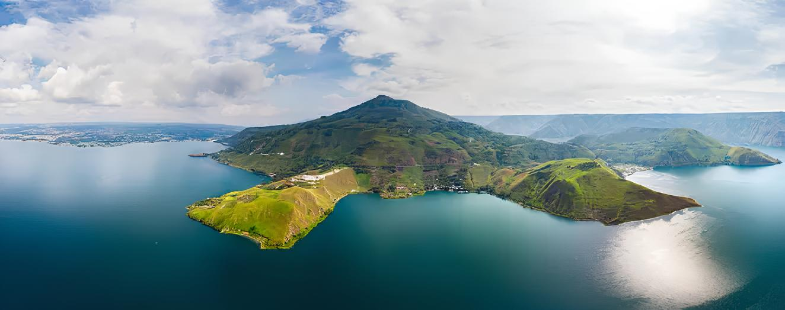
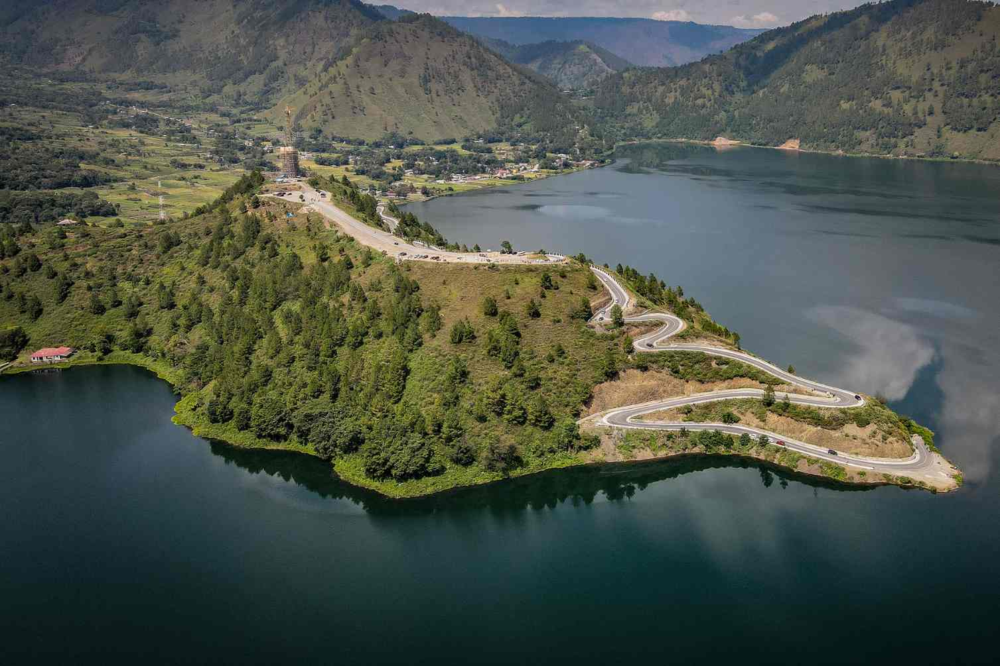

Sejarah
Danau Toba terbentuk oleh letusan supervolcano sekitar 74.000 tahun yang lalu. Letusan ini adalah salah satu letusan gunung berapi terbesar dalam sejarah bumi. Terbentuklah kaldera yang kemudian terisi air, membentuk Danau Toba.
Proses pembentukan Danau Toba ini menimbulkan dampak global yang signifikan, termasuk perubahan iklim yang sangat drastis. Letusan ini mempengaruhi ekosistem global dan kehidupan di seluruh dunia. Di tengah Danau Toba terdapat Pulau Samosir, terbentuk dari aktivitas vulkanik. Pulau ini terkenal dengan keindahan alam dan budayanya.
Geografis
Danau Toba terletak di Sumatera Utara, Indonesia, dengan panjang sekitar 100 km, lebar 30 km, dan kedalaman mencapai 505 meter. Danau ini adalah danau vulkanik terbesar di dunia. Keberadaannya tidak hanya menakjubkan karena ukurannya, tetapi juga karena keanekaragaman hayati yang ada di sekitarnya.
Dikelilingi pegunungan, kawasan sekitar Danau Toba sangat subur dan cocok untuk pertanian. Selain itu, Danau Toba juga dikenal dengan keindahan alamnya yang menawan, seperti air terjun, danau kecil, serta hamparan sawah yang luas. Panorama ini menjadikan Danau Toba sebagai salah satu destinasi wisata utama di Indonesia.
Wisata
Danau Toba adalah destinasi utama di Sumatera Utara. Wisatawan bisa menikmati pemandangan danau, mengunjungi Pulau Samosir, dan berbagai aktivitas air. Keindahan panorama Danau Toba, yang dikelilingi oleh pegunungan, memberikan pengalaman tak terlupakan bagi setiap pengunjungnya.
Pulau Samosir
Pulau Samosir menawarkan atraksi budaya dan alam. Wisatawan dapat mengunjungi desa tradisional Batak, melihat rumah adat, serta menikmati tarian dan musik Batak. Pulau ini juga menjadi pusat kegiatan kebudayaan Batak, dengan berbagai festival dan upacara adat yang masih dilaksanakan hingga kini. Lihat detail lain
Pemandian Air Panas Pangururan
Terletak di Pulau Samosir, tempat ini ideal untuk bersantai sambil menikmati pemandangan Danau Toba. Air panas berasal dari aktivitas vulkanik di bawah danau. Selain itu, pemandian ini juga dikenal dengan kandungan mineralnya yang baik untuk kesehatan tubuh. Lihat detail wisata lain